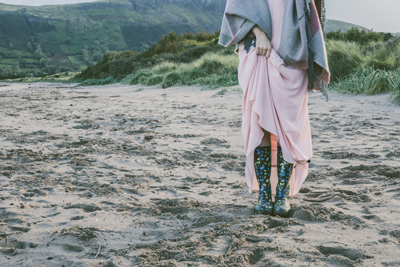

Hello! I'm Amy Graham, and its so lovely to meet you.
“I am 20 years old and I am in my first year studying interaction design at The Belfast School of Art. I love; hand-lettering, the world around us, travelling, meeting new people, finding cute new coffee shops, the beach, pretty stationary and home decor, taking pictures, chilling to sleeping at last, cups of tea and all the pretty mugs that come with and of course rich tea biscuits. I have a passion for all things creative and I don't see what I'm doing as work; I LOVE it. I'm always up for a challenge and learning new things (currently html/css), I'm excited for the journey ahead and for what is to come in the future.”
Portfolio
Below is some of the work I have produced during my time studying Interaction Design at university. I'm currently looking at design and typography and learning how to develop webpages using html and css. This year started off with point, line and plane exercises to bring us back to basics and to inspire us to create ideas out of these elements. This has therefore inspired the rest of my work and opened my mind up to thoughtful design. The second half of our first semester we have been going through basic html and css, doing structered exercises and then feeding what we have learnt into our own personal pages.
I also have a part time small business on the side doing commissioned work which I love as gives me an opportunity to use my hands more and experient in different areas.